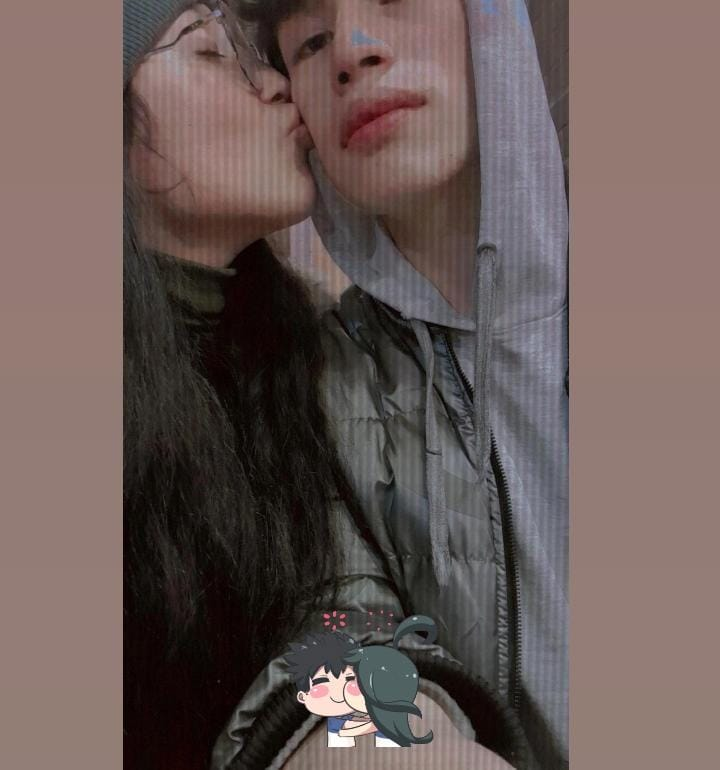

Tengo algo que sale desde lo más profundo de mi corazón.

Hola mi niña, perdón por el atrevimiento de escribirte este gran texto:
Se que llevas un dolor por todo lo que ocacione en ti, por todos los llantos que te ise derramar, con todo esto que te dire no quiero borrar el pasado ni tampoco decirte olvida lo que paso, pero necesito decirte esto de todo corazon que estoy profundamente arrepentido, se que me dedique mucho a min trabajo y que entiendo que durante todo ese tiempo hubo momentos donde esperabas de mi cariño, atencion, compañía, apoyo, sostenerte de la mano y poder darte un abrazo y sentir que caminabamos juntos, entiendo que mientras yo estaba enfocado en mi trabajo, tu estabas sintiendo una falta de amor, una falta de presencia y eso te fue lastimando poco a poco. Me duele saber que la persona que mas amo sufrio por cosas que yo pude haber hecho diferente.
Quiero que sepas que nunca deje de amarte nunca fuiste menos importante para mi pero tambien entiendo que el amor no solo se dice se demuestra con acciones, con tiempo, con detalles, con estar ahi cuando la otra persona nos necesita y en eso falle contigo, me equivoque y acepto mi error y tengo una gran culpa por aver ocacionado todo esto, se que muchas veces tu me hablaste y aun asi fui terco y de todo ello me arrepiento mucho, perdoname por las veces que te hice sentir que estabas sola por las veces que esperaste algo de mi y no supe darte lo que necesitabas perdóname por los momentos donde mi ausencia te hizo sentir que no eras suficiente, porque la realidad es que te amo infinitamente y eres todo para mi y yo debi cuidarte mucho, no quiero perderte mi niña no quiero que nuestra historia termine asi te amo muchisimo y me duele muhco mucho todo esto que esta sucediendo, quiero pedirte una oportunidad mas una ultima oportunidad pero no quiero que sea solo una promesa bonita en un mensaje, quiero demostrarte con hechos que puedo ser mucho mejor que aprendi de lo que ah pasado, cambiar y construir contigo una relación maravillosa donde ya no habrá mas daño, donde ya no habrá sufrimiento, quiero darte tranquilidad, amor, seguridad, confianza, felicidad, quiero que volvamos a tener momentos donde sonrias conmigo, donde sientas paz a mi lado y donde nunca tengas que preguntarte si eres importante para mi, porque quiero demostrartelo todos los días, todos los días mi niña.
Se que ahora estas herida y que no es facil confiar otra vez, entiendo tu dolor y no quiero presionarte para que olvides todo de un momento a otro solo quiero que sepas que estoy dispuesto a luchar por nosotros a escuchar mas a estar mas presente y a hacer las cosas bien si nada de fallos ni errores, puedo prometerte que voy a esforzarme cada daa para cuidarte respetarte y amarte como mereces.
TE AMO CON TODO MI CORAZÓN MI CHIQUITA ❤️
Gracias por todo el amor que me diste por la paciencia que tuviste y por todo lo que construimos.
No fui un hombre de bien, no fui un hombre que iso las cosas correctas, pero si por ti estuve dispuesto a cambiar todos los errores que había en mi, y lo ise mi niña, y ahora también lo hare de corazon y será un cambio general que realizare y ya no habrá mas fallos ni errores, yo si te quiero en mi vida, quiero que sepas con mucha certeza que cuando te digo que quiero, no hablo de algo pasajero, hablo de una verdad profunda que vive en mi y que te digo de todo corazon, te amo a infinito y mas allá mi niña hermosa, me comprometo de todo corazon a ser mejor para ti, a cambiar mis errores para ya no mas cometer errores, con toda sinceridad déjame caminar a tu lado, quiero compartir mi vida contigo, construir un amor infinito con paciencia y paso a paso y mucho amor, te digo todo esto desde el alma, desde mi corazon por que formar un hogar contigo pido a Dios todos los días. cada sueño que un dia hablamos juntos quiero cumplirlos para los 2 , quiero hacerte la persona mas feliz del mundo, quiero estar contigo hasta el ultimo latido de mi corazon.
Quiero pasar mis días junto a ti, mi único amor eres tu, me siento orgullosos de la gran mujer que eres y de lo mucho que te esfuerzas y auqnue la vida sea dura no te rindes, cada dia pienso en ti en lo maravillosa que eres, de ahora para adelante quiero estar ahí para ti en todo momento, yo estoy muy agradecido contigo por todo lo que diste e isiste por mi, también agradecido con tus padres enormemente, se que ellos no quieren verte sufrir por que eres su hija y eres todo para ellos, les duele también que tu pases situaciones muy malas por mi culpa, pero ya no será mas eso, te lo prometo mi niña que todo será muy distinto, que estoy muy muy dispuesto a ser una mejor persona para ti, todo este arrepentimiento es muy doloroso y quiero corregirlo por ti, dar todo mi amor por ti, dar todo de mi por ti, y daría y haría lo que fuera por ti mi niña y como te mencionaba hasta mi vida daría por ti, por que tu lo mereces todo pero no sufrimiento.